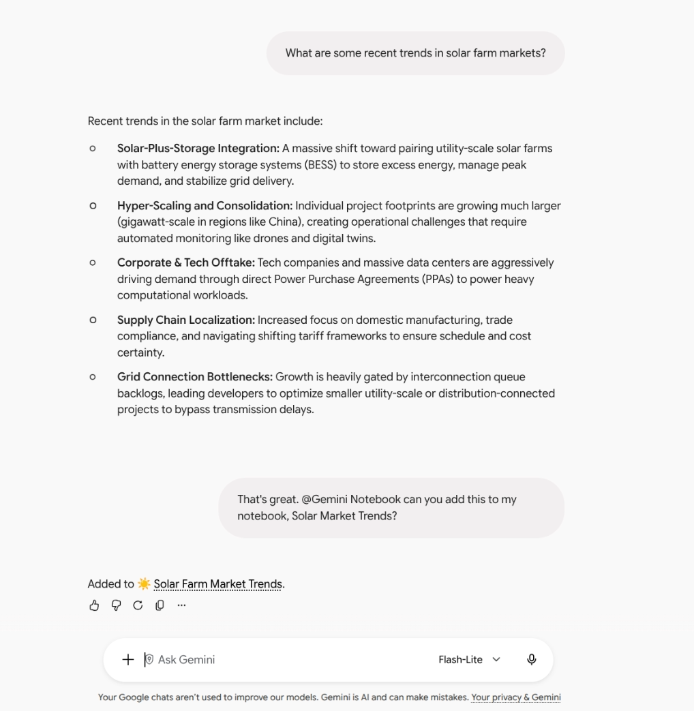
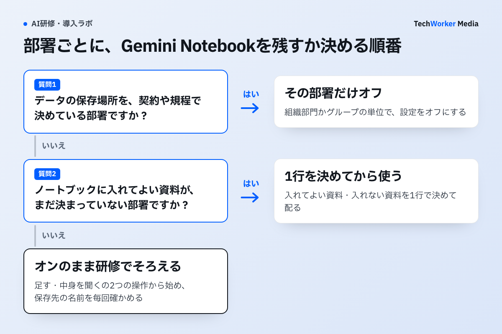

Geminiのチャットで頼むだけで、Gemini Notebook（旧NotebookLM）に資料を足せるようになりました。Googleの告知では、管理者側のアクセスは最初からオンです。どの部署で使わせるかを決める前から、社員が使える状態になっています。この記事では、情シスが確かめる設定と、部署ごとの決め方を説明します。
10月23日から、Geminiのチャットでノートブックを作れる
原文“Gemini Notebook is now also available as a Connected App in the Gemini app. This new integration allows you to manage and query notebooks directly within your chats using natural language.”
日本語訳Gemini Notebookは、Geminiアプリの連携アプリとしても使えるようになりました。この連携により、チャットの中から普段の言葉でノートブックを管理し、中身について質問できます。

画面の下の方で、利用者は「@Gemini Notebook」と書き、直前の回答を自分のノートブックへ足すよう頼んでいます。Geminiは「Added to Solar Farm Market Trends」と返し、保存先のノートブック名を示しています。告知が挙げる操作は、ノートブックの作成・編集・削除、資料の追加・更新・削除、一覧の表示、中身を使った回答の4種類です。「@」を付けなくても、Geminiが連携アプリを使う場面を自分で判断することがあります。この画面からは、会社のアカウントでどの資料が入るかまでは分かりません。それは次の設定と共有の条件で決まります。


使えるのは、2つの設定がどちらもオンの人
管理者が見るのは、Geminiアプリの設定とGemini Notebookの設定の2つです。両方がオンの組織部門やグループの人だけが、チャットからノートブックを使えます。
告知は、管理者側のアクセスをGeminiとGemini Notebookの2つの設定で制御すると説明しています。利用者も、Geminiアプリの「設定 > 連携アプリ（Connected Apps）」で自分の分を切り替えられます。
| どこで決まるか | 最初の状態 | 確かめること |
|---|---|---|
| 管理コンソールのGeminiアプリ | 組織の設定による | どの組織部門・グループでオンか |
| 管理コンソールのGemini Notebook | 組織の設定による | 上と同じ範囲でオンか |
| 連携アプリとしての利用（管理者側） | オン | 上の2つが両方オンの人が使える |
| 利用者のGeminiアプリの設定 | オン（欧州経済領域はオフ） | 利用者が自分で切り替えられる |
提供はRapid ReleaseとScheduled Releaseの両方で、告知の時点で始まっています。対象は、すべてのGoogle Workspaceの契約者、Workspace Individual、個人のGoogleアカウントです。
ドライブの資料は、閲覧権限のある人だけが入れられる
ドライブのファイルは、元のファイルを閲覧できる人だけがノートブックの資料にできます。一方、データリージョンの設定は、Gemini Notebookが処理・キャッシュするデータには適用されません。
Googleの管理者ヘルプは、ノートブックに入れたドライブのファイルが自動で同期されると説明しています。組織の共有設定はそのまま効きます。性能のため、ドライブのファイルはGemini Notebook側でキャッシュされます。
ここで分かるのは、見えない資料が新しく見えるようにはならない、という点です。それでもTechWorkerは、お客さまの資料を扱う部署では「どの資料をノートブックに入れてよいか」を先に決めることを勧めます。データの保存場所を契約や規程で決めている会社は、データリージョンの例外にも注意が必要です。
止めるか残すかは、部署ごとに決める
TechWorkerは、部署ごとに条件を見て決める方法を勧めます。止める部署は、組織部門かアクセスグループでGemini Notebookをオフにします。

次の図は、TechWorkerが勧める判断の順番です。Googleが定めた手順ではありません。データの保存場所を決めている部署と、入れてよい資料が決まっていない部署を先に分けます。
オフにする操作は、管理コンソールの「生成AI > Gemini Notebook > サービスのステータス」で行います。この操作には、Gemini設定の管理者権限が要ります。親の設定が変わっても今の設定を保つときは「Override（オーバーライド）」を選びます。
オンのまま残す部署では、TechWorkerの研修で使い方をそろえます。たとえば、会議の要点をノートブックに足す、自分のノートブックの中身を聞く、という2つの操作から始めます。保存先のノートブック名は、回答の表示で毎回確かめる習慣にします。
今日やること：設定を見て、社内の1行を決める
- 管理コンソールで、Geminiアプリと Gemini Notebook がオンになっている組織部門・グループを確かめます。
- データの保存場所を決めている部署があれば、その部署だけ Gemini Notebook をオフにします。サービスごとの設定なので、オフにするとGemini Notebook本体も使えなくなると考えられます（TechWorkerの見立て）。そのため、使わせたい部署は残します。
- 「ノートブックに入れてよい資料・入れない資料」を1行で決め、全員に配ります。例：「お客さまの資料は、ノートブックに入れない」。
- 他の生成AIの設定も気になる場合は、研修サイトの生成AI利用の安全度チェックで確かめます。
会社アカウントの設定全体はGeminiの法人導入で扱っています。Gemini アプリでファイルを作る機能など、10月のほかの変更はGeminiとCopilotの比較にまとめました。
出典と確認範囲
確認日：2026年11月6日。提供の条件と設定はGoogleの公式告知と管理者ヘルプ、部署ごとの判断の順番と社内の1行はTechWorkerの提案です。TechWorkerの環境でこの連携を試した記録はまだありません。自社の組織部門での表示は、管理者が実環境で確かめてください。